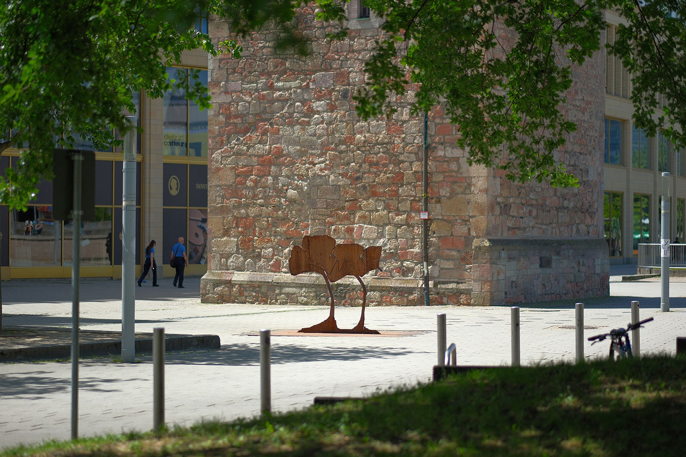
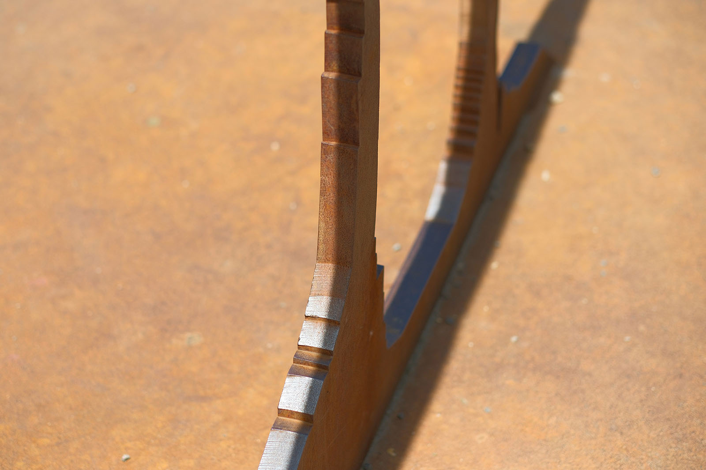
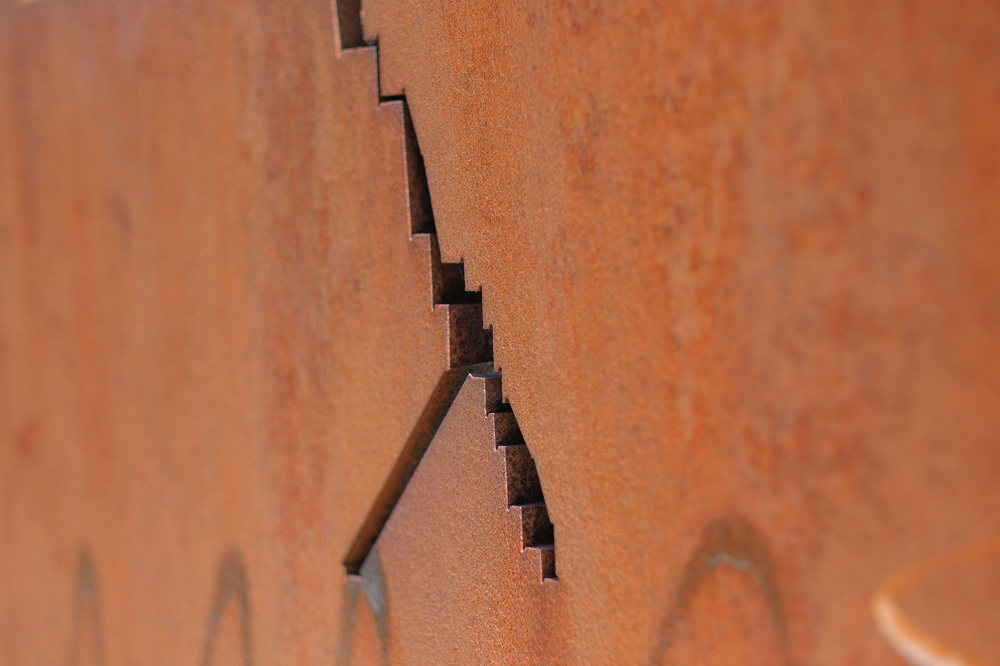
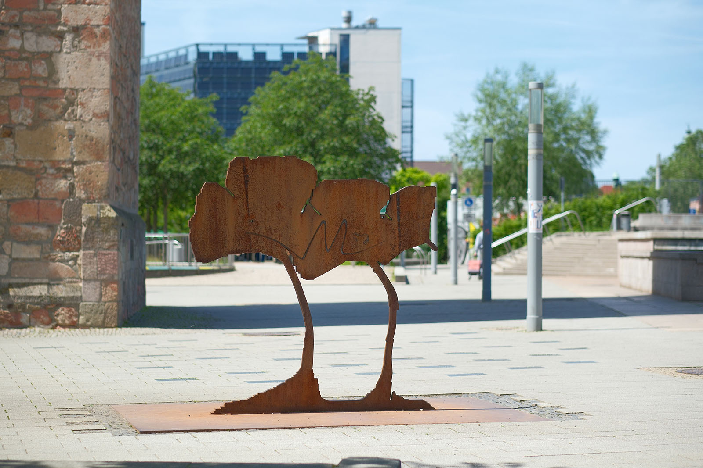

Recherche und Werkbeschreibung: Roman Pilz. Text und Fotografien wechseln sich wie in einem Magazin ab. Ein Klick auf ein Bild öffnet die Großansicht.
Die prominent, unmittelbar vor dem Roten Turm als Wahrzeichen der Chemnitzer Altstadt, stehende Metall-Plastik "Ginko" entstand im Rahmen des Kunstprojekts "InSicht", das vom 20. Oktober 2001 bis zum 19. Oktober 2002 im öffentlichen Raum von Chemnitz stattfand. In Kooperation mit vier Kunstvereinen wurden für die Dauer von einem Jahr 25 Kunstwerke im öffentlichen Raum von Chemnitz gezeigt.
Bruhn konnte wie die 26 anderen beteiligten Künstler frei über den Aufstellungsort und die Ausgestaltung seines Werkes bestimmen. Fast alle Kunstwerke wurden nach Ablauf des Jahres wie geplant wieder abgebaut. Der "Ginko" und die auf der anderen Seite des Stadthallenparks aufgestellten "Verwicklungen" seines Kollegen im Chemnitzer Künstlerbund, Rainer Maria Schubert, sind zwei der wenigen bis heute im Stadtraum sichtbaren Früchte dieser erfolgreichen Kunstaktion.
Rüdiger Philipp Bruhn wurde 1955 in Zschopau geboren und verstarb 2018 in Chemnitz. Bruhn absolvierte zunächst eine Ausbildung als Metallarbeiter und war von 1972 bis 1978 in diesem Beruf tätig. Nebenbei machte er von 1974 bis 1977 ein Abendstudium an der Hochschule für Bildende Kunst in Dresden.
Darauf folgend schloss er von 1979 bis 1984 ein Studium an der Hochschule für Kunst und Design an der Burg Giebichenstein/Halle an. Nach seinem Abschluss ist der Künstler freischaffend in Karl-Marx-Stadt/Chemnitz tätig. Er lehrte seit 1994 an der Fachhochschule für angewandte Kunst in Schneeberg.
Der Chemnitzer Künstler arbeitete mit verschiedenartigen Techniken und verfolgte experimentelle Ansätze. Neben seiner Arbeit als Bildhauer und Installationskünstler ist er als Maler und Zeichner aktiv. Er kreierte große, abstrakte Collage-Arbeiten, die oft vielschichtig expressive und mehr kontemplative Motive verbinden.
Fragmentarisches, Symbolhaftes und Materialsensibilität sind charakteristische Erkennungszeichen seiner Kunst.
Bruhn arbeitet bei seiner Objektkunst meist ortsbezogen - hier war es der Verlauf des ehemaligen Grabens vor der mittelalterlichen Stadtmauer, der den Künstler inspirierte, sowie seine Sammlung von Ginkgoblättern, die er als bekanntermaßen experimentierfreudiger Künstler per Scanner digitalisiert hatte. Es heißt, früher hätten dort nahe der Stadtmauer auch Ginkgos gestanden.
Der als lebendes Fossil geltende Ginkgo-Baum, dessen rudimentäre Fächerblätter weit in die Erdgeschichte zurückverweisen, steht vor allem in Asien, wo der Baum heute noch heimisch ist, als Symbol des ewigen Lebens. Erst Mitte des 18. Jahrhunderts kam der Baum aus dem fernen Osten wieder nach Europa. Er wurde als robuster und zugleich schöner Baum vor allem an Straßen und in Parks gepflanzt.
Gut denkbar, dass er auch am Stadtgraben von Chemnitz gepflanzt wurde, so wie es der Künstler überliefert wissen will. Die Stadtmauer und ihre Tore wurden zwischen 1805 und 1855 abgerissen - vielleicht mussten dabei auch die eigentlich zu mehr als tausendjährigem Leben fähigen Bäume weichen. Heute ist jedenfalls kein Ginkgo mehr in der Nähe auszumachen. Erst in jüngerer Zeit wurden sechs Kastanien in nächster Nachbarschaft gepflanzt und gegenüber im Stadthallenpark wachsen seit den 1970er Jahren andere exotische Gehölze, wie zum Beispiel die bekannte Flügelnuss oder der Tulpenbaum.
Bruhn fertigte den Entwurf für seine Plastik als eine Art Pixel-Grafik: zweidimensional und mit sichtbaren Stufenkanten als Konturen. Drei Silhouetten der markanten, in der Mitte gespaltenen Blätter, schmiegen sich in gleichmäßiger, kleiner werdender Reihung nebeneinander. Sie bilden eine gemeinsame Form, die von den zwei langen, gebogenen Stielen der größeren Blätter getragen wird.

Die Skizze diente als Vorlage, um das Motiv aus einer 4 Millimeter starken Platte aus Stahlblech zu schneiden. Der Laserstrahl brannte jede Abstufung und jeden Einschnitt präzise in das Metall. Die zu wesentlichen Teilen aus Eisen bestehende Legierung rostet durch natürliche Prozesse und bildet eine wundervolle, rotbraune Patina. Der Künstler verwendete wohl üblichen Baustahl als Material - stellenweise sind noch Borungen mit Gewinde und gepunzte Nummerierungen im Material sichtbar.
Die Ginkgo-Form wirkt aus der Ferne wie ein Schattenriss oder Scherenschnitt: dunkel und zweidimensional. Der leicht rötliche Farbton korrespondiert schön zum rötlichen Stein des ehemaligen Wachturms der Stadtmauer.
Rüdiger Philipp Bruhn wurde 1955 in Zschopau geboren und verstarb 2018 in Chemnitz. Bruhn absolvierte zunächst eine Ausbildung als Metallarbeiter und war von 1972 bis 1978 in diesem Beruf tätig. Nebenbei machte er von 1974 bis 1977 ein Abendstudium an der Hochschule für Bildende Kunst in Dresden.
Darauf folgend schloss er von 1979 bis 1984 ein Studium an der Hochschule für Kunst und Design an der Burg Giebichenstein/Halle an. Nach seinem Abschluss ist der Künstler freischaffend in Karl-Marx-Stadt/Chemnitz tätig. Er lehrte seit 1994 an der Fachhochschule für angewandte Kunst in Schneeberg.

Der Chemnitzer Künstler arbeitete mit verschiedenartigen Techniken und verfolgte experimentelle Ansätze. Neben seiner Arbeit als Bildhauer und Installationskünstler ist er als Maler und Zeichner aktiv. Er kreierte große, abstrakte Collage-Arbeiten, die oft vielschichtig expressive und mehr kontemplative Motive verbinden.
Fragmentarisches, Symbolhaftes und Materialsensibilität sind charakteristische Erkennungszeichen seiner Kunst.

